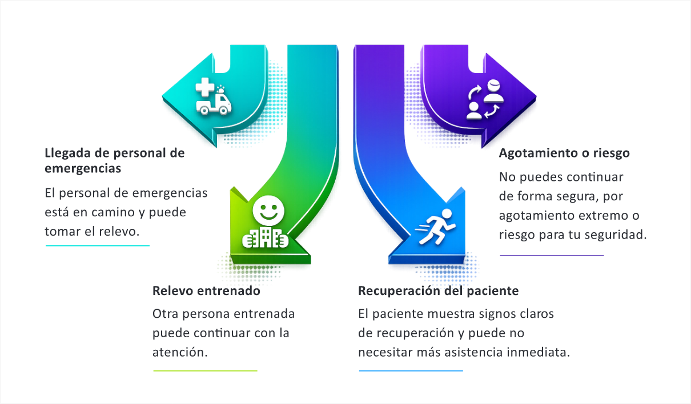

17 · Sin desfibrilador
RCP sin DEA disponible
Si no hay DEA disponible, continúa realizando compresiones torácicas de alta calidad.
La ausencia de DEA no debe detener la atención. Verifica que emergencias haya sido activado y pide a alguien que busque un DEA si existe la posibilidad.
Si hay más de un reanimador, alternen cada dos minutos para mantener la calidad de las compresiones.

Tener en cuenta
La RCP continua puede mantener la circulación mientras llega el equipo con desfibrilador.
No hacer
No suspendas las compresiones solo porque no hay DEA disponible.